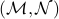
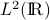

Office Hours Th 3:10-4pm at Room 3131 Math Science Building
Email bhzhou AT ucdavis DOT edu
HW1 Soln1
HW2 Soln2
HW3 Soln3
HW4 Soln4
HW5 Soln5
HW6 Soln6
HW7 Soln7
HW8 Soln8
Week 1: Reproducing Kernel Hilbert Space and dual norm of the space of measures Week1
Week 2: Measure space, Why we need Sigma-algebra Week2
Week 3: Borel measurable function V.S. Lebesgue measurable function, and  measurable function Week3
Week 4: Absent due to out of town. Working for making-up notes
Week 5: Fourier Series for  functions Week5
Week 6: An introduction to Sobolev space Week6
Week 7: Bounded linear operators on Hilbert space Week7
Week 8: The space of bounded linear operators on Hilbert space and its topology Week8
Week 9: The resolvent set and the spectrum of bounded linear operators on Hilbert space Week9
Week 10: The compact, self-adjoint operators on any separable Hilbert space Week10